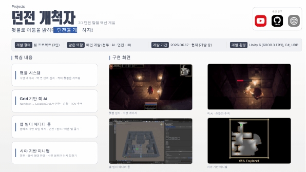

THE PROJECT
빛이 길이 되는 던전 탐험
횃불로 어둠을 밝히며 던전을 탐험하는 액션 게임입니다. 빛의 수명과 시야가 탐색 및 적의 행동에 연결됩니다.
담당한 일메인 개발 · 전투 · AI · 던전 · UI
Unity 6C#URPGrid A*Editor ToolsMinimap
ENGINEERING NOTES
문제에서 구현까지
01
수명이 있는 횃불과 적의 소등
문제탐색에 사용하는 빛이 설치 위치와 시간, 적의 공격에 따라 달라져야 했습니다.
구현벽 면 단위 설치와 수명 게이지를 구현했습니다. TorchInstance가 남은 시간과 감쇠를 관리하고 피해 시 남은 시간을 줄입니다.
결과적이 횃불을 공격해 꺼뜨리고 빛의 수명이 탐색 자원이 되는 구조를 구성했습니다.
관련 코드 보기 +
저장소 접근 권한이 필요할 수 있습니다.
SYSTEM FLOW- 01벽면에 설치
- 02수명 · 밝기 감쇠
- 03적의 횃불 공격
- 04빛이 사라지는 탐색
02
LocationGrid 기반 적 AI
문제던전 구조에 맞는 이동과 순찰·시야 추적이 필요했습니다.
구현NavMesh에서 LocationGrid A* 기반 이동으로 전환하고 FOV 감지와 순찰을 연결했습니다. 범위 탐색 버퍼를 재사용해 반복 할당을 줄입니다.
결과격자 기반 지형 정보와 AI 이동이 같은 구조를 사용하도록 구성했습니다.
관련 코드 보기 +
저장소 접근 권한이 필요할 수 있습니다.
SYSTEM FLOW- 01LocationGrid
- 02A* 경로 탐색
- 03FOV · 순찰
- 04격자 기반 이동
03
팔레트로 만드는 맵 빌더
문제여러 던전·필드·마을의 타일과 환경 배치를 반복 제작해야 했습니다.
구현팔레트 기반 타일 배치와 맵 굽기를 제공하는 에디터 도구를 구현했습니다.
결과런타임 맵 데이터와 제작용 배치를 연결하고 반복 제작 작업을 도구로 지원했습니다.
관련 코드 보기 +
저장소 접근 권한이 필요할 수 있습니다.
SYSTEM FLOW- 01타일 팔레트
- 02에디터 배치
- 03맵 굽기
- 04런타임 맵 데이터
04
빛과 탐색 상태를 반영하는 미니맵
문제어둠 속 미탐색 영역과 광원에 의해 보이는 영역을 구분해야 했습니다.
구현광원·탐색 상태를 반영하고 변화한 범위만 미니맵에 다시 칠합니다.
결과시야 기반 탐색 정보를 미니맵에 전달하며 전체 갱신 비용을 피했습니다.
관련 코드 보기 +
저장소 접근 권한이 필요할 수 있습니다.
SYSTEM FLOW- 01광원 · 시야 변화
- 02탐색 상태 갱신
- 03변경 범위만 재칠하기
- 04미니맵 출력
TAKE A CLOSER LOOK
영상과 프로젝트 자료

실제 구현 화면이 담긴 원본 포트폴리오 · 클릭하면 Canva에서 확인할 수 있습니다.